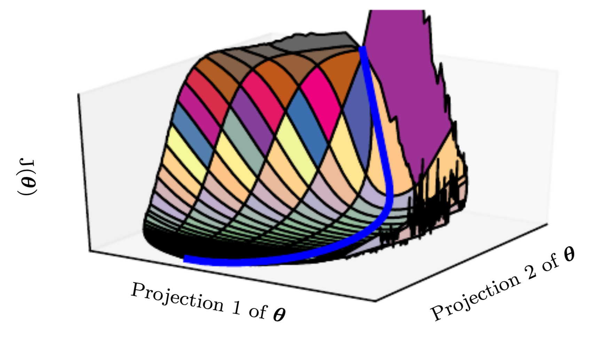
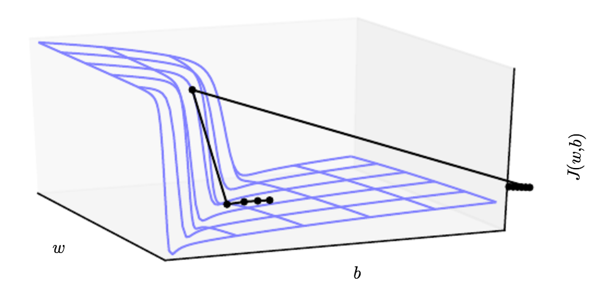
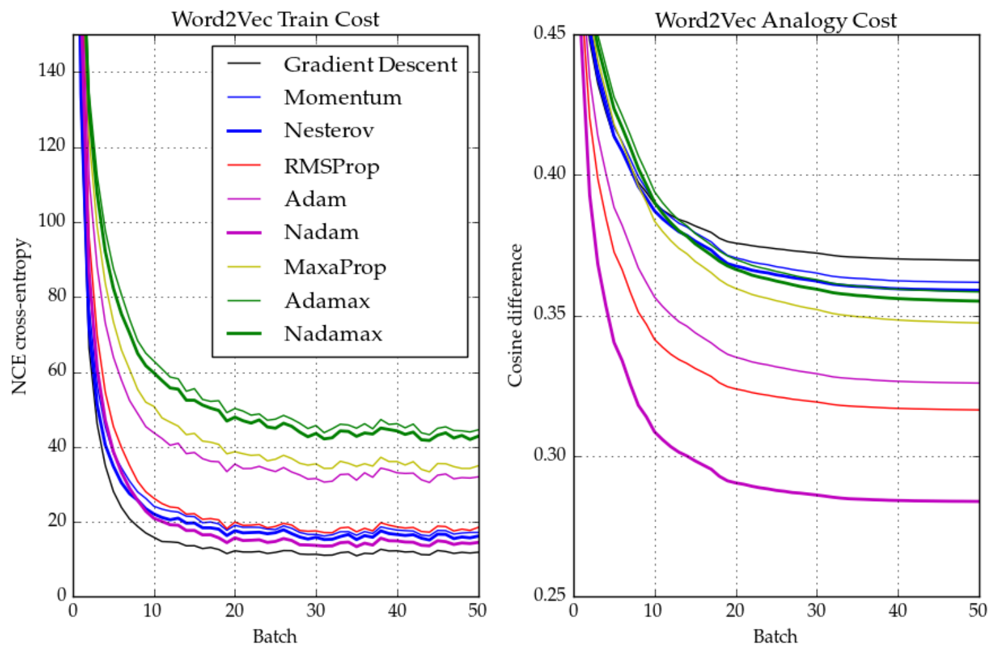
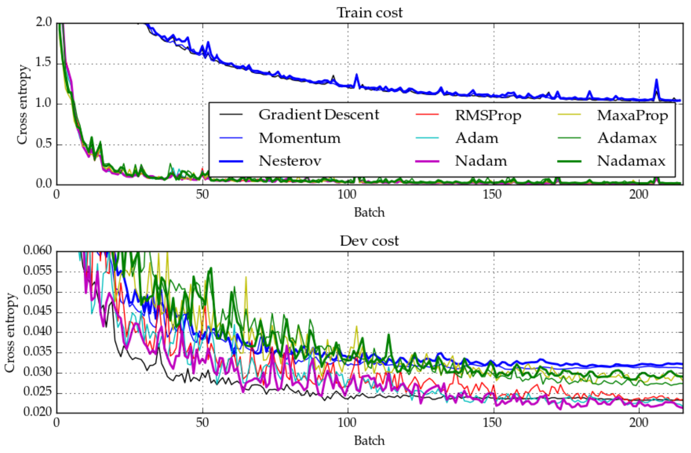
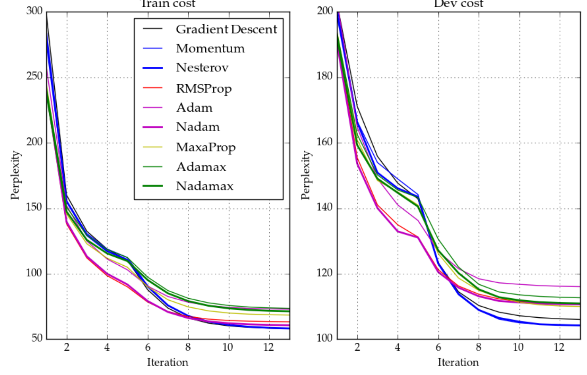

class: center, middle # Gradient Descent Optimization An quick overview of algorithms for optimization of neural networks <br> by __Ari Benjamin__ <br> {**credit** [A helpful blog post](http://sebastianruder.com/optimizing-gradient-descent/) by [Sebastian Ruder](http://sebastianruder.com/#open)} --- ### Parameter Optimization is Hard.  Neural nets have a lot of parameters. We expect to observe: - Valleys and plateaus (flat, low curvature) - Cliffs ('ill-conditioned' areas) - Saddles - Local minima And all of this occuring in absurdly high dimensional space. --- ### Classical Gradient Descent High school all over again. <br> `$$ \mathbf g_t \leftarrow \nabla_{\theta_{t-1}}\ f(\mathbf\theta_{t-1}) $$` `$$ \theta_t \leftarrow \mathbf\theta_{t-1}-\eta\mathbf g_t$$` Update parameters to decrease the cost function with respect to __the entire training set__. We could do better. --- ### Classical Gradient Descent High school all over again. <br> `$$ \mathbf g_t \leftarrow \nabla_{\theta_{t-1}}\ f(\mathbf\theta_{t-1}) $$` `$$ \theta_t \leftarrow \mathbf\theta_{t-1}-\eta\mathbf g_t$$` Update parameters to decrease the cost function with respect to __the entire training set__. We could do better. <img src='images/SGD.png' width="250px" style="float:right;"/ > #### Stochastic Gradient Descent (SGD) Update parameters __after seeing each new datapoint__. Data may be redundant, and in general gradient estimation will scale as `\(\frac{\sigma}{\sqrt{n}}\)`. Still converges! Randomness allows to jump between local minima. --- ### Performance Preview <img src='images/opt1.gif' width="350px" style="float:right;"/> <img src='images/opt2.gif' width="350px" style="float:left;" /> [Images credit](http://cs231n.github.io/neural-networks-3/#ada) --- ### Problems of (S)GD <br> - Need to choose the learning rate `\( \eta \)`. <br> - Can get stuck at saddle points or areas of low slope.  <br> - All parameters are updated with the same `\( \eta \)`. --- ### Adapt! #### Adagrad Divide `\( \eta \)`, elementwise, by the `\( L_2 \)` norm of __all__ previous gradients. (Each parameter gets its own `\( \eta \)` !). `$$ \mathbf g_t \leftarrow \nabla_{\theta_{t-1}}\ f(\mathbf\theta_{t-1}) $$` `$$ \mathbf n_t \leftarrow \mathbf n_{t-1} + \mathbf g_t^2$$` `$$ \theta_t \leftarrow \mathbf\theta_{t-1}-\eta \frac{\mathbf g_t}{\sqrt{\mathbf n_t}+\epsilon}$$` __Obvious problem:__ gradient vanishes over time. --- ### Adadelta and RMSprop Resolve the problem of dimishing learning rates in Adagrad. #### RMSprop `$$ \mathbf g_t \leftarrow \nabla_{\theta_{t-1}}\ f(\mathbf\theta_{t-1}) $$` `$$ \mathbf n_t \leftarrow \nu \mathbf n_{t-1} + (1-\nu)\mathbf g_t^2$$` `$$ \theta_t \leftarrow \mathbf\theta_{t-1}-\eta \frac{\mathbf g_t}{\sqrt{\mathbf n_t}+\epsilon}$$` #### Adadelta `$$ \mathbf g_t \leftarrow \nabla_{\theta_{t-1}}\ f(\mathbf\theta_{t-1}) $$` `$$ \mathbf p_t \leftarrow \nu \mathbf p_{t-1} + (1-\nu)\mathbf g_t^2$$` `$$ \mathbf m_{t-1} \leftarrow \nu \mathbf m_{t-2} + (1-\nu)\mathbf \Delta \theta_{t-1}^2$$` `$$ \theta_t \leftarrow \mathbf\theta_{t-1}-\eta \frac{\sqrt{\mathbf p_{t-1}}}{\sqrt{\mathbf n_t}+\epsilon} \mathbf g_t$$` --- ### Momentum Motivation: Speeding movement through slowly changing dimensions (same motivation as 2nd order methods, CG & HF). `$$ \mathbf g_t \leftarrow \nabla_{\theta_{t-1}}\ f(\mathbf\theta_{t-1}) $$` `$$ \mathbf m_t \leftarrow \mu \mathbf m_{t-1} + \mathbf g_t$$` `$$ \theta_t \leftarrow \mathbf\theta_{t-1}-\eta \mathbf m_t$$` Momentum tends to work very well during the "__transient__" period of neural network training. --- ### ADAM ("Adaptive Moments") RMSprop + momentum. `$$ \mathbf g_t \leftarrow \nabla_{\theta_{t-1}}\ f(\mathbf\theta_{t-1}) $$` `$$ \mathbf m_t \leftarrow \mu \mathbf m_{t-1} + (1-\mu)\mathbf g_t$$` `$$ \mathbf n_t \leftarrow \nu \mathbf n_{t-1} + (1-\nu)\mathbf g_t^2$$` Initializing `\(m_0\)` and `\(n_0\)` as __0__ imposes a lingering bias. We can account for this like so: `$$ \mathbf{\hat{m}_t} \leftarrow \frac{\mathbf m_{t}}{ (1-\mu^t)}$$` `$$ \mathbf{\hat{n}_t} \leftarrow \frac{\mathbf n_{t}}{ (1-\nu^t)}$$` `$$ \theta_t \leftarrow \mathbf\theta_{t-1}-\eta \frac{\mathbf{\hat{m}_t}}{\sqrt{\mathbf{\hat{n}_t}}+\epsilon}$$` Also: __Adamax__ which is Adam but uses infinity norm rather than L2 for `\(n_t\)` --- ### Nesterov Acceleration Motivation: slow down when you hit the end of the hill. `$$ \mathbf g_t \leftarrow \nabla_{\theta_{t-1}}\ f(\mathbf\theta_{t-1}- \eta \mu \mathbf m_{t-1}) $$` `$$ \mathbf m_t \leftarrow \mu \mathbf m_{t-1} + \mathbf g_t$$` `$$ \theta_t \leftarrow \mathbf\theta_{t-1}-\eta \mathbf m_t$$` <br> <img src='images/NAG.jpeg' width="600px" style="float:center;"/> Essentially momentum but using more present information. --- ### Review Three ideas, many combinations #### Momentum #### Nesterov Acceleration #### Adaptation ___ Combos and extensions: <br> - Adam = Ada + Momentum - Nadam = Nesterov + Adam - Adamax, Maxaprop, Nadamax... = `\(L_\infty\)` norm rather than `\(L_2\)` --- ### A Sense of Performance <img src='images/opt1.gif' width="350px" style="float:right;"/> <img src='images/opt2.gif' width="350px" style="float:left;" /> [Images credit](http://cs231n.github.io/neural-networks-3/#ada) --- ### Actual Performance: Word2Vec  Learning word similarity on the Wikipedia corpus. L2 adapdation wins. --- ### Actual Performance: MNIST  Classifying MNIST. Again, adaptation wins. --- ### Actual Performance: LSTM  Predicting the next word in a sentence with an RNN. Plain momentum wins! --- ### A final note: clipping Can deal with exploding gradients via gradient clipping: ```python # all parameter gradients will be clipped to # a maximum norm of 1. sgd = SGD(lr=0.01, clipnorm=1.) ``` ```python # all parameter gradients will be clipped to # a maximum value of 0.5 and # a minimum value of -0.5. sgd = SGD(lr=0.01, clipvalue=0.5) ``` --- class: center, middle ### There is no 'best' optimizer. #### Test Nadam, RMSprop, and plain momentum <br> Optimization and initialization efforts are more important than architecture. --- ### Keras Implementation Very easy! ```python opt = keras.optimizers.SGD(lr=0.01, momentum=0.0, decay=0.0, nesterov=False, clipvalue =0) model.compile(loss='mean_squared_error', optimizer=pt) ``` Can also implement TensorFlow optimizers. Much the same, but also has the Follow the Regularized Leader (FTRL) algorithm, good for sparse weights. ```python # e.g. opt = keras.optimizers.TFOptimizer(tf.train.FtrlOptimizer) ```